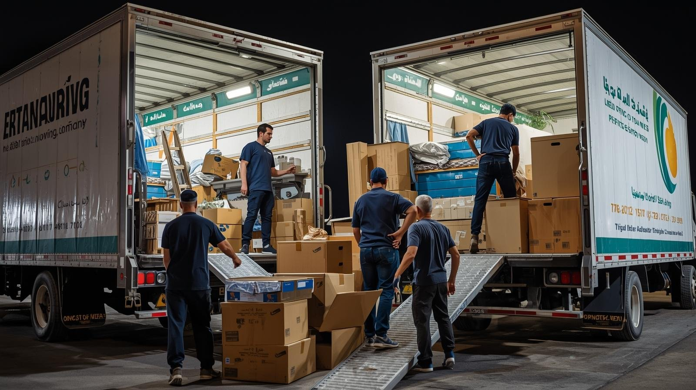

أفضل شركة نقل عفش وادي الدواسر للسعوديين | 0541145506

مع توسع الحركة المعمارية وانتقال الأسر والأفراد من مساكنهم القديمة إلى مساكن جديدة في وادي الدواسر، أصبحت خدمة نقل عفش وادي الدواسر من الخدمات الضرورية التي يبحث عنها الكثير من السكان، تختلف سهولة عملية نقل العفش باختلاف أحجام الأثاث وعدد القطع المطلوب نقلها، يجب اختيار شركة متخصصة لديها خبرة في التعامل مع قطع الأثاث الكبيرة والزجاجية الحساسة، يجب أن تكون الشركة تمتلك سيارات مجهزة بها أدوات مثبتة لتثبيت الأثاث وحمايته من الانزلاق أثناء عملية النقل، تقدم لك كافة هذه الخدمات شركة نقل الرياض بالإضافة إلى خدمات التحميل والتفريغ والنقل والتركيب في أماكن النقل الجديدة، يُمكنك التواصل مع الشركة بالضغط على أيقونة الواتس اب.
خطوات نقل عفش وادي الدواسر
أولًا: يبدأ الأمر باختيار موعد نقل مناسب، الاتفاق المسبق مع شركة نقل لتفادي أي تأخير.
ثانيًا: يجب عمل قائمة بالأثاث المراد نقله لتسهيل التنظيم، وضمان عدم نسيان أي قطعة أثناء التحميل والتفريغ.
ثالثًا: يتم تغليف الأثاث بأدوات حماية مثل الكراتين المقواة، الأشرطة اللاصقة، والفقاعات لضمان حماية الأثاث ونقله بأمان.
رابعًا: يتم تحميل العفش بطريقة منظمة، حيث توضع القطع الكبيرة والثقيلة في الأسفل، بينما توضع القطع الصغيرة والخفيفة بالأعلى.
خامسًا: يتم استخدام سيارات للنقل مجهزة ومزودة بأدوات تثبيت لضمان استقرار الأثاث أثناء الحركة لمسافات طويلة.
سادسًا: عقب الوصول يتم تفريغ الأثاث بعناية، ثم يتم تركيبة في المكان المخصص له في الموقع الجديد، مع التأكد من سلامة كل قطعة.
مميزات شركات نقل عفش وادي الدواسر
تتميز شركات نقل عفش وادي الدواسر بتقديم خدمات متكاملة تلبي جميع متطلبات العملاء بكفاءة ومرونة، فهي تعتمد على فنيين مدرّبين على فك وتركيب الأثاث بجميع أنواعه، مع استخدام أدوات متخصصة تحافظ على سلامة القطع الكبيرة والثمينة، إضافة إلى ذلك، توفر هذه الشركات وسائل تغليف حديثة لحماية الأثاث من الخدوش أو التلف، وشاحنات مجهزة لنقل العفش بشكل آمن داخل المنطقة أو إلى مدن أخرى، كما تهتم بالالتزام بالمواعيد وتقديم حلول تناسب الميزانيات المختلفة، مما يجعلها الخيار الأمثل للأسر والأفراد الذين يبحثون عن سرعة وجودة وراحة بال أثناء الانتقال، من أفضل شركات نقل عفش وادي الدواسر “شركة نقل الرياض” التي تمتلك خبرة كبيرة في مجال نقل العفش، تواصل الآن مع الشركة بالضغط على أيقونة الواتس اب واحصل على خدمة نقل آمنة.
كيف تختار افضل شركة نقل عفش في وادي الدواسر
عند اختيار شركة نقل عفش في وادي الدواسر عليك اتباع بعض المعايير، تتمثل في:
- ابحث عن الشركات التي تحظى بسمعة جيدة والتي تمتلك تقييمات إيجابية من العملاء السابقين.
- تأكد من أن الشركة توفر خدمات متكاملة مثل خدمة النقل والفك والتغليف والتركيب في المكان الجديد.
- تأكد من أن الشركة لديها سيارات مخصصة لنقل العفش ومجهزة بوسائل حماية للحفاظ على العفش.
- تأكد من أن الشركة لديها فنيين مدربين على أعلى مستوى على خدمات النقل والفك والتركيب بطريقة احترافية دون إحداث أي خدوش في الأثاث.
اختار الشركة التي لديها أسعار واضحة ومناسبة مع جودة الخدمة المقدمة مع توفيرالشركة افضل شركة نقل اثاث بخميس مشيط ، دينا نقل عفش حي ظهرة لبن ،نقل مكيفات سبليت الرياض.
كل هذه المميزات تنطبع على شركة نقل الرياض أفضل شركة نقل عفش وادي الدواسر، إذا كنت ترغب في نقل عفشك بأمان فإن شركة نقل الرياض هي خيارًا مثاليًا لك، للتواصل اضغط على ايقونة الواتس اب.
اسعار وخدمات نقل العفش في وادي الدواسر
إن أسعار نقل عفش وادي الدواسر تختلف باختلاف حجم الأثاث، عدد القطع، المسافة بين مكان النقل القديم والمكان الجديد، الخدمات المطلوبة هل هي نقل عفش فقط أم نقل وتغليف وتركيب، كل هذه العوامل تؤثر على أسعار نقل عفش وادي الدواسر، بعض الشركات تقدم باقات متكامل تشمل التغليف والنقل والتفريغ بأسعار تنافسية، مع إمكانية إضافة خدمات أخرى مثل التخزين المؤقت، الونش، يمنح التنوع في الخدمات العملاء فرصة في اختيار الخدمة التي تناسب ميزانيتهم مع الحفاظ على جودة الخدمة المقدمة.
كيفية طلب خدمة نقل عفش وادي الدواسر
إذا كنت تبحث عن تجربة نقل آمنة وسريعة، فإن شركة نقل الرياض توفر لك الحل المثالي من خلال أنظمة حجز مرنة تناسب جميع العملاء، يمكنك التواصل معنا مباشرة عبر الهاتف أو الضغط على ايقونة الواتس اب الظاهرة أمامك لتحديد الموعد المناسب لنقل العفش، مع إمكانية اختيار الخدمات الإضافية مثل الفك والتركيب أو استخدام الونش الكهربائي لرفع الأثاث بأمان، بفضل خبرة الشركة الطويلة وكفاءتها العالية، نضمن لك عملية نقل منظمة وسهلة من وادي الدواسر إلى أي مكان آخر دون عناء.
نصائح لضمان سلامة الاثاث عند نقل العفش في وادي الدواسر
عند التفكير في نقل عفش وادي الدواسر، من المهم التركيز على بعض التفاصيل التي تحافظ على سلامة الأثاث أثناء الرحلة، يُنصح دائمًا باستخدام البطانيات المخصصة لتغطية الأثاث الخشبي لمنع الخدوش الناتجة عن الاحتكاك، وكذلك تغليف الزجاج والقطع القابلة للكسر بطبقات مزدوجة من الفقاعات الهوائية، كما يُفضل ترتيب الأغراض الصغيرة في صناديق مرقمة لتسهيل التعرف عليها عند التفريغ، ووضع العلامات التحذيرية على الصناديق الهشة، ولا تنسَ التأكد من تثبيت الأثاث داخل السيارة بشكل محكم حتى لا يتعرض للاهتزاز أثناء النقل لمسافات طويلة، تتبع شركة نقل الرياض كافة هذه النصائح وتوفر للعملاء خدمة نقل آمنة لا مثيل لها، تواصل الآن واضغط على أيقونة الواتس اب.
في الختام، في النهاية، يظل اختيار شركة متخصصة وموثوقة هو العامل الأهم لضمان نجاح عملية نقل عفش وادي الدواسر دون قلق أو خسائر، ومع خبرة شركة نقل الرياض في هذا المجال، يمكنك الاطمئنان أن أثاثك سيصل إلى وجهته بأمان وبأفضل الطرق الاحترافية، إذا كنت تبحث عن الدقة، السرعة، والجودة في الخدمة، فإن شركة نقل الرياض هي خيارك الأمثل لتحقيق تجربة نقل مريحة وناجحة، لا تتردد وتواصل الآن مع شركة نقل الرياض من خلال الضغط على ايقونة الواتس اب.
الاسئلة الشائعة عن نقل عفش وادي الدواسر
هل توفر شركات نقل عفش وادي الدواسر خدمة التغليف؟
نعم، توفر شركة نقل الرياض أفضل شركات نقل العفش في وادي الدواسر خدمة تغليف احترافية باستخدام أجود أنواع الخامات لحماية أثاثك من الخدوش والكسور.
كم تستغرق عملية نقل العفش في وادي الدواسر؟
تختلف مدة عملية نقل العفش باختلاف المسافة بين الجهة القديمة والجديدة، حسب حجم العفش وعدد القطع والخدمات المطلوبة.
هل تشمل خدمة نقل عفش وادي الدواسر الفك والتركيب؟
نعم توفر شركات نقل العفش مثل شركة نقل الرياض خدمات الفك والتركيب ضمن الباقة الأساسية أو في حالة طلبها العميل.